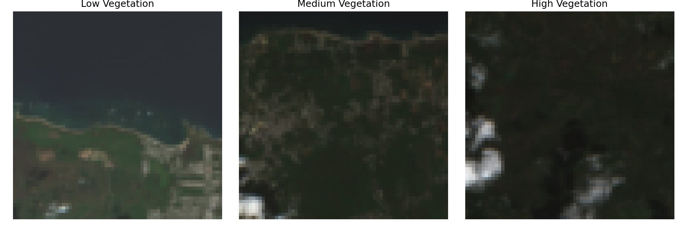

Ask why.

01 / BOTH DIRECTIONS
Scroll-driven collage
Image cards move apart to uncover a new message. Use once, as the main introduction.
See the scroll version ↗ PandaHat
PandaHatMOTION STUDIES / 08 POSSIBILITIES
Play, hover, or tap each example. These are options to choose from, not a recommendation to use every effect at once.

01 / BOTH DIRECTIONS
Image cards move apart to uncover a new message. Use once, as the main introduction.
See the scroll version ↗02 / BOTH DIRECTIONS
Headline lines rise into place with a short delay between each. Ideal for the opening statement.
03 / FIELDNOTES
A small lift and portrait zoom make the roster feel responsive. Hover the card or tap the preview.
04 / BOTH DIRECTIONS
A brief unfolds beneath a question. The full research story can continue on its own page.
Look closer.05 / SIGNAL
The image and foreground type move at different speeds. Subtle depth for a research feature.
06 / SIGNAL
A thin light crosses the image. A visual motif for investigation, rather than a fake analysis result.
07 / FIELDNOTES
A slow typographic ribbon separates sections. Keep it decorative and easy to pause.
08 / SIGNAL
A moving dash links a question to methods and evidence. Useful in a compact research diagram.
Fieldnotes: the collage, subtle section reveals, and member-card lift.
Signal: staggered typography, a restrained scanning light, and research-detail transitions.
Every example respects reduced-motion preferences. The collage and member hover treatment are already included in the expanded drafts; this page lets you try the other directions.
Return to the drafts ↗